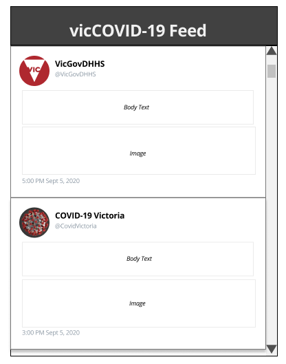

Description
The RSS Feed is a feed which will provide real-time updates about COVID-19 Victoria. There will be two feeds: A twitter feed which presents tweets from accounts like VicGovDHHS, COVID-19 Australia and COVID-19 Victoria; and another feed presenting articles from Official Government Websites such as DHHS Victoria.We decided to implement this feature was we want to relay the important information to Victorians, at the right time. With several media platforms reporting updates about COVID-19, we wanted to help Victorians by creating a single platform where they can view daily updates about COVID-19 in Victoria.
Our group chose to create RSS Feeds to present daily updates because the feature can be automated and presented in a way which is easy to read and navigate. Alternative designs include News Wall, Carousel and List. The RSS Feed was chosen over these alternatives because: the news wall occupies too much space; the list lacks visuals and the carousel focus on one article at a time.
How does it work?
The website will have a dedicated page for the two feeds. It will be presented as a vertical feed divided into assorted cards for each article. The Feeds will be created with RSS.app, a third-party application which is used to create RSS Feeds that presents articles from Twitter accounts or websites.Prototype
User Stories
-
As a parent,
I want to see daily updates about COVID-19 in Victoria,
So I can stay informed about what is happening around me. -
As a student,
I want to see tips for maintaining wellbeing during lockdown,
So I can stay healthy and positive throughout this difficult time. -
As a business owner,
I want to see daily updates about COVID-19,
So I can forecast my business operations based on what is happening. -
As citizen,
I want to see daily news about COVID-19,
So I know when the lockdown might start easing up. -
As a student,
I want to know what the current situation is with COVID-19,
So I know where I should look for part-time jobs. -
As a student,
I want to know what the current restrictions are,
So I can prepare for changes in my studies.